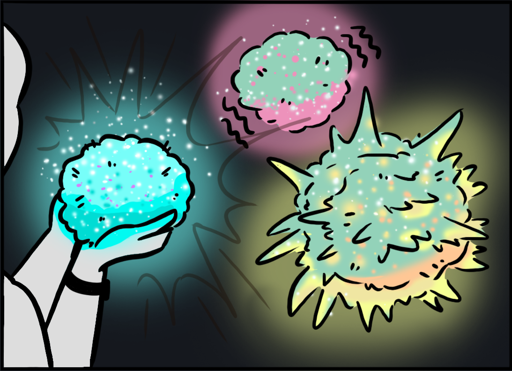

TEMOCHIMORI: Expressing Live Heart Rate through a Living Kokedama

TEMOCHIMORI is a palm sized kokedama (“moss ballˮ) whose appearance reflects its wearerʼs live heart rate. Physiological biofeedback usually presents bodily change as numbers or graphs, leaving unclear whether a living display changes the experience. We present TEMOCHIMORI—literally “holding a forest in your handˮ in Japanese—a living interface that visualizes your inner state, giving you an opportunity to feel connected with nature while inviting self-awareness.
Human–Nature Interaction · Physiological Computing · Biofeedback · Living Well-being Interfaces